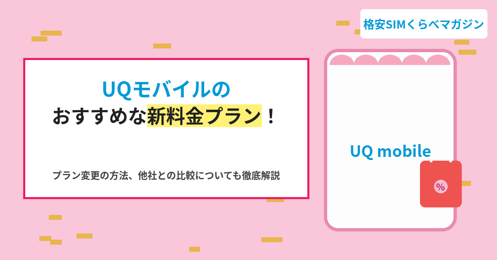
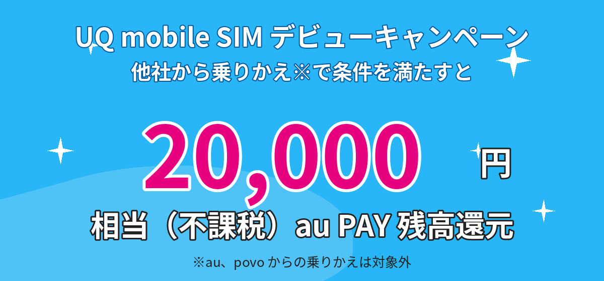
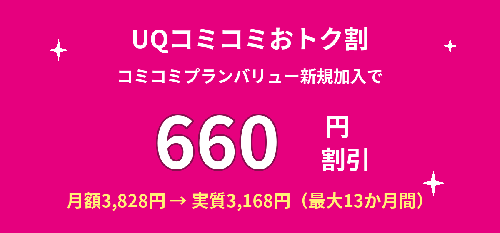
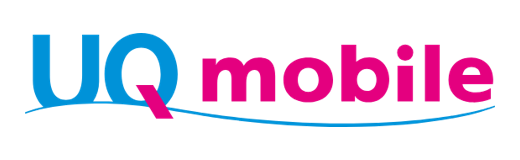
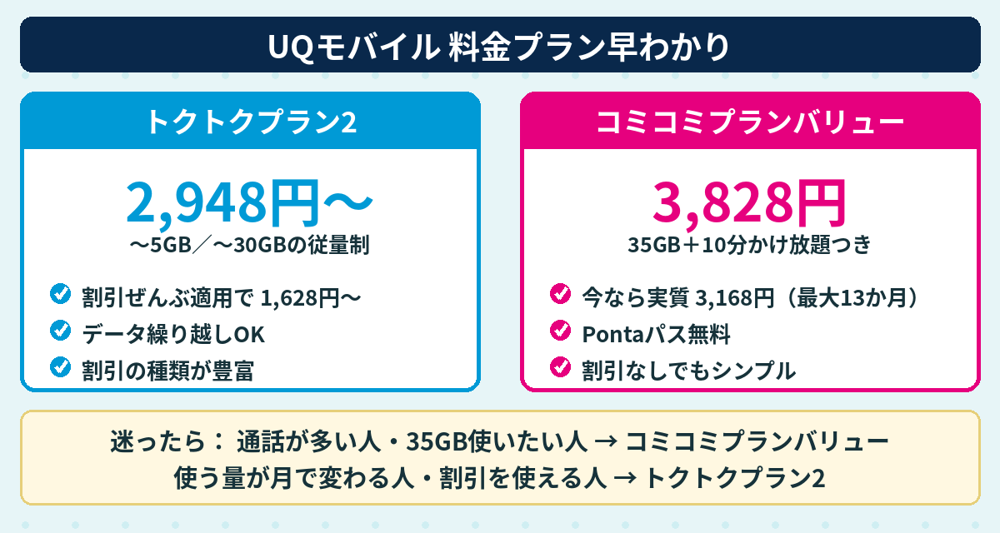
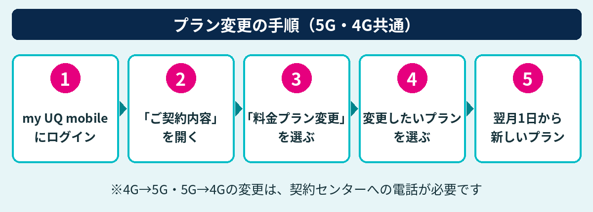

【2026年11月】UQモバイルの料金プランは2種類！最安1,628円〜・どっちがおすすめか比較
UQモバイルの料金プランは「トクトクプラン2」（〜5GB 2,948円／〜30GB 4,048円）と「コミコミプランバリュー」（35GB＋10分かけ放題で3,828円）の2つです。割引をすべて使えるならトクトクプラン2が最安で月1,628円から。割引を使えない人や通話が多い人は、コミコミプランバリューが向いています。
実際の月額は使う量と使える割引で1,628円〜4,048円まで変わります。早見表で自分の金額を確認できます。
- UQモバイルの料金プランは？
- UQモバイルをお得に安く利用する方法は？
- UQモバイルの料金と他社の料金を比較した結果は？
- UQモバイルの料金プランを変更する方法は？

のau PAY 残高がもらえる
- au・povo以外から乗りかえ（MNP）
- UQ mobile オンラインショップでSIMカードまたはeSIMだけを契約
- 「コミコミプランバリュー」か「トクトクプラン2」＋増量オプションⅡに加入（増量オプションⅡは月額550円・適用月から最大7ヵ月間無料）
いつもらえる？ 開通の翌月下旬以降にau PAY 残高へ還元されます（お申し込みの翌月末までに開通が必要）。
- 法人契約の場合は対象外です
- ご注文をキャンセルされた場合は対象外です
- ご注文月を1カ月目として、2カ月目の月末までに回線が切替されなかった場合は対象外です
- 1回線につき1回限りです
- ほかの施策とは併用できない場合があります
- 過去にUQ mobileオンラインショップでau PAY 残高が付与されるキャンペーンの適用を受けた方は、対象外となる場合があります
- 還元時点までに、ご契約された回線に紐づくau ID・au PAY アプリを取得し、au PAY サービス利用規約へ同意いただく必要があります
- キャンペーン期間：終了日未定（出典：UQ mobile公式サイト、2026年11月23日確認）

ご加入から最大13カ月間
35GB＋10分かけ放題が 3,828円 → 3,168円/月
- 受付期間中に「コミコミプランバリュー」へ新たに加入
- 14カ月目以降も割引を続けるなら「au PAY ゴールドカード」会員に（カードがない場合、14カ月目からは3,828円/月になります）
- 1回線につき1回のみの適用です
- 14か月目以降の割引は、毎月月末時点で「au PAY ゴールドカード」会員である必要があります
- 17カ月目の末日までにカードが発行されていない場合は対象外となります
- 加入後にau PAY ゴールドカードを解約（退会）された場合、再度申し込んでも14か月目以降の割引は適用されません
- KDDI/沖縄セルラーが実施する他のサービス・キャンペーンとは併用できない場合があります
- 受付期間：2026年6月25日〜終了日未定／価格は税込（出典：UQ mobile公式サイト、2026年11月23日確認）
- UQモバイルの料金プランは？
- UQモバイルで一番安いプランはどれ？
- コミコミプランバリューのおすすめポイント
- トクトクプラン2のおすすめポイント
- UQモバイルをお得に安く利用する方法は？
- 結局いくら？料金シミュレーション
- 最新キャンペーン
- 共通特典
- 契約する際の注意点
- オプション料金
- メリット・デメリット
- 他社の料金と比較した結果
- 料金プランを変更する方法
- よくある質問
- まとめ
更新履歴：2026年11月23日 初版公開（料金・キャンペーンはUQ mobile公式サイトで確認）。
UQモバイルの料金プランは？

プランは2種類です。
- コミコミプランバリュー：35GB＋10分かけ放題
- トクトクプラン2：〜5GB／〜30GBの従量制で、各種割引が使える

※金額はすべて税込。2026年11月23日時点のUQ mobile公式サイトの料金をもとに作成
| コミコミプランバリュー | トクトクプラン2 | |
|---|---|---|
| データ容量 | 35GB | 〜5GB／〜30GB |
| 月額料金 | 3,828円 | 〜5GB：2,948円／〜30GB：4,048円 |
| 割引後の月額料金 ※1 | 実質3,168円 ※2 | 〜5GB：1,628円／〜30GB：2,728円 |
| 概要 | 10分かけ放題付き | − |
※すべて税込価格
※1 トクトクプラン2の割引後の金額は、下の割引をすべて適用した場合です
・5GB利用時割引：−1,100円（5GB以下の月に自動適用）
・自宅セット割：−1,100円（家族セット割の場合は−550円）
・au PAY カードお支払い割：−220円
※2 UQコミコミおトク割（−660円）適用時。加入から最大13か月間、14か月目以降は3,828円（au PAY ゴールドカード会員は割引継続）
UQモバイルの概要
| 利用回線 | au回線 |
|---|---|
| 5G対応 | ○ |
| 平均実測速度 ※1 | ダウンロード：131.74Mbps／アップロード：19.22Mbps |
| 最低利用期間 | なし ※2025年10月1日以降の新規契約は、1年以内の解約で契約解除料1,100円 |
| 自宅セット割 | 1,100円割引 最大10回線まで |
| 初期費用 | 事務手数料：3,850円 |
| 通話料 | 22円/30秒 |
| 通話オプション | 通話パック60：月額660円／通話放題ライト：880円／通話放題：1,100円〜1,980円 |
※価格は税込
※1 実測平均速度はみんなのネット回線速度参照
新規受付を終了したプラン：トクトクプラン／ミニミニプラン／コミコミプラン＋／くりこしプラン +5G（S／M／L）
UQモバイル公式サイトを見る料金・キャンペーンの最新情報はこちらUQモバイルで一番安いプランはどれ？
最も安くなるのは「トクトクプラン2」で、データ利用量が5GB未満のときです。自宅セット割・au PAYカードお支払い割・5GB利用時割引をすべて適用すると、月額1,628円まで下がります。
| プラン | データ量 | 割引後の月額 |
|---|---|---|
| トクトクプラン2 | 5GBまで | 1,628円（最安） |
| トクトクプラン2 | 30GBまで | 2,728円 |
| コミコミプランバリュー | 35GB | 実質3,168円（10分かけ放題つき） |
※割引の内訳は上記の脚注のとおり（税込）。
ただし1,628円は割引をすべて使える人の金額です。条件を満たせない割引があると、その分だけ高くなります。割引の中身は「お得に安く利用する方法」で解説します。
UQモバイルのコミコミプランバリューとは？
コミコミプランバリューは35GB＋10分かけ放題で月額3,828円のプランです。今なら「UQコミコミおトク割」で最大13か月間、実質3,168円になります。
| コミコミプランバリュー | |
|---|---|
| データ容量 | 35GB |
| 月額料金 | 3,828円 |
| 割引後の月額料金 | 実質3,168円 ※1 |
| データ繰り越し | 可能 |
| 割引サービス | なし |
| 概要 | 10分かけ放題付き |
※すべて税込価格
※1 UQコミコミおトク割（−660円）適用時。加入から最大13か月間、14か月目以降は3,828円（au PAY ゴールドカード会員は割引継続）
コミコミプランバリューがおすすめな人
- 中容量のデータ容量を利用したい人
- 10分以内の通話をする機会が多い人
- 割引なしでお得にプランを利用したい人
UQモバイルのトクトクプラン2とは？
トクトクプラン2は〜5GB／〜30GBの従量制で、各種割引を使えます。割引をすべて使うと5GBまで1,628円、30GBまで2,728円です。
| トクトクプラン2 | ||
|---|---|---|
| データ容量 | 〜5GB | 〜30GB |
| 月額料金 | 2,948円 | 4,048円 |
| 割引後の月額料金 | 1,628円 | 2,728円 |
| データ繰り越し | 可能 | |
| 割引サービス | 自宅セット割（最大1,100円割引）／au PAY カードお支払い割（220円割引）／〜5GB利用時割引（1,100円割引）／家族セット割（550円）※自宅セット割と家族セット割は併用不可 | |
※すべて税込価格。割引の内訳は冒頭の脚注のとおり。
トクトクプラン2がおすすめな人
- 小〜中容量のデータ容量を利用したい人
- 毎月利用するデータ容量に差がある人
- UQモバイルの割引を適用できる人
- 通話の機会が少ない人
UQモバイルの「コミコミプランバリュー」のおすすめポイントは？
コミコミプランバリューのメリットは3つです。
- 10分かけ放題がプランに付属
- 割引が使えなくても料金がシンプルでお得
- Pontaパスが無料
10分かけ放題が無料で付いてくるって本当？
コミコミプランバリューには10分かけ放題が付属しています。同じ内容のオプション「通話放題ライト」は通常月額880円なので、通話が多い人はプラン込みのほうがお得です。
各種割引が適用されなくてもお得って本当？
コミコミプランバリューの月額料金は35GBが3,828円で、自宅セット割などの各種割引は適用されませんが十分お得に利用できます。割引なしで比べると、トクトクプラン2の30GBは4,048円のため、コミコミプランバリューの方がお得だとわかります。
| 項目 | コミコミプランバリュー | トクトクプラン2 |
|---|---|---|
| 月額料金 | 3,828円 | 4,048円 |
| データ容量 | 35GB | 30GB |
| 10分かけ放題 | 無料 | 880円 |
※すべて税込価格
今なら期間限定で月額料金が割引されるって本当？
コミコミプランバリューでは、現在「UQコミコミおトク割」で月額料金が13か月間660円割引になります。14か月目以降は通常月額料金の3,828円になりますが、au PAY ゴールドカード会員は割引継続になるためお得です。
Pontaパスを無料で使えるって本当？
コミコミプランバリューはPontaパス（通常月額548円）が無料で使えます。
Pontaパスの特典サービス
- ローソンで使える週替わりクーポン
- 対象店舗でau PAYを利用するとポイント還元率アップ
- auマンデイ：TOHOシネマズで毎週月曜日に1,100円で映画を見られる
- デリバリーアプリ「menu」の配達料が何度でも無料
- 映画やドラマ、音楽、雑誌などを楽しめる
- 修理代金サポートやウイルスブロック、データお預かりを利用できる
UQモバイルの「トクトクプラン2」のおすすめポイントは？
トクトクプラン2のメリットは2つです。
- 5GB未満の月は自動で割引される
- 自宅セット割など各種割引が使える
トクトクプラン2のポイント
- データ利用量が5GB未満だと割引になる
- 各種割引が適用できる
データ利用量が5GB未満だと割引になる
5GB未満の月は自動で1,100円割引されます。各種割引をすべて使うと月額1,628円になります。
| トクトクプラン2 | |
|---|---|
| データ容量 | 〜5GB |
| 通常料金 | 4,048円 |
| 5GB利用時割引 | -1,100円 |
| 月額料金 | 2,948円 |
※すべて税込価格
各種割引が適用できる
トクトクプラン2では、各種割引が使えます。
- 自宅セット割（固定回線とのセット割）
- 家族セット割
- au PAY カードお支払い割
※自宅セット割と家族セット割は併用できません。
| 割引 | 最大割引額 |
|---|---|
| 5GB利用時割引 | 1,100円 |
| 自宅セット割 | 1,100円 |
| au PAY カードお支払い割 | 220円 |
| 家族セット割 | 550円 |
※すべて税込価格
UQモバイルをお得に安く利用する方法は？
お得に使うコツは、割引とキャンペーンの活用です。
- 自宅セット割・家族セット割を使う
- au PAYカードで支払う
- 60歳以上の人は60歳以上通話割を使う
自宅セット割を適用できるか？
対象のインターネットかauでんきを契約すると、毎月最大1,100円割引されます。1契約につき最大10回線まで登録できます。
| 割引内容 | 対象のインターネットコース・でんきコースに申し込みで最大1,100円割引 |
|---|---|
| 条件 | 対象プラン（トクトクプラン2）に申し込み、対象のインターネットコース、でんきコースに申し込み |
| 割引額 | 1,100円 |
| 対象のインターネット | auひかり、ビッグローブ光などの光回線サービス／J:COMなどのケーブルテレビ／UQ WiMAXの連携事業者 |
自宅セット割の料金シミュレーション
| プラン名 | トクトクプラン2 | |
|---|---|---|
| 通常料金 | 2,948円 | 4,048円 |
| データ量/月 | 5GB | 30GB |
| 割引額 | -1,100円 | -1,100円 |
| 割引後の月額料金 | 1,628円 | 2,728円 |
※割引後の金額の内訳：5GB以下で−1,100円、自宅セット割−1,100円（家族セット割の場合−550円）、au PAY カードお支払い割−220円（いずれも税込）。
家族セット割を適用できるか？
家族セット割は家族でUQモバイルを利用すると月額料金が550円割引になります。家族で10回線まで割引が可能で、別の住所に住んでいる家族も対象です。なお自宅セット割とは併用できません。
| 割引内容 | 合計10回線まで1回線あたり550円割引 |
|---|---|
| 条件 | 家族であること／割引対象の料金プラン（トクトクプラン2）に加入 |
| 割引額 | 550円 |
家族セット割の料金シミュレーション
| プラン名 | トクトクプラン2 | |
|---|---|---|
| 通常料金 | 2,948円 | 4,048円 |
| データ量/月 | 5GB | 30GB |
| 割引額 | -550円 | -550円 |
| 割引後の月額料金 | 2,178円 | 3,278円 |
au PAY カードで支払いが可能か？
月額料金をau PAYカードで支払うと、「au PAY カードお支払い割」が適用され毎月220円が割引されます。対象プランはトクトクプラン2のみで、自宅セット割や家族セット割との併用も可能です。
| 特典内容 | au PAY カードでのお支払いでUQ mobileの利用料金から毎月220円割り引き |
|---|---|
| 条件 | 月末時点で登録されている支払方法がau PAY カード（au WALLET クレジットカード）であること |
| 対象プラン | トクトクプラン2 |
| お申し込み | 不要 |
60歳以上通話割を適用できるか？
60歳以上通話割は、60歳以上の人が「通話放題」を申し込むと、通常1,980円が880円になる割引です。キャリアメール（月額220円）も無料になります。
| 特典内容 | 通話オプション「通話放題」1,980円/月を1,100円/月割引／メールサービス220円/月が無料 |
|---|---|
| 適用条件 | 対象プラン契約かつ「通話放題」に加入／申し込み時点で年齢が60歳以上であること |
60歳以上通話割の料金シミュレーション
| プラン名 | トクトクプラン2 | |
|---|---|---|
| 通常料金 | 4,048円 | 4,048円 |
| データ量/月 | 5GB | 30GB |
| 〜5GB | -1,100円 | – |
| 自宅セット割 | -1,100円 | -1,100円 |
| au PAYカードお支払い割 | -220円 | -220円 |
| 通話放題 | 1,980円 | 1,980円 |
| 60歳以上通話割 | -1,100円 | -1,100円 |
| 割引後の月額料金 | 2,508円 | 3,608円 |
UQモバイルは結局いくら？データ量と割引別の月額料金シミュレーション
月額の目安は最安1,628円（割引をすべて使えるトクトクプラン2・5GB以下）。割引なしでは2,948円〜4,048円、通話が多い人はコミコミプランバリュー3,828円が目安です。
| 毎月の使い方 | 割引なし | 自宅セット割あり | 家族セット割あり |
|---|---|---|---|
| 5GB以下（トクトクプラン2） | 2,948円 | 1,628円 | 2,178円 |
| 5GB超〜30GB（トクトクプラン2） | 4,048円 | 2,728円 | 3,278円 |
| 35GBまで＋10分かけ放題（コミコミプランバリュー） | 3,828円（最大13か月間3,168円） | 対象外 | 対象外 |
※すべて税込。2026年11月23日時点（UQ mobile公式サイト）
※トクトクプラン2は、月間データ利用量が5GB以下の月は自動で−1,100円（2,948円はこの割引後の金額）
※「自宅セット割あり」「家族セット割あり」は、au PAY カードお支払い割（−220円）も適用した金額
※増量オプションⅡ（月550円）と通話料（22円/30秒）は含みません
※3,168円はUQコミコミおトク割（−660円）適用時。加入から最大13か月間、14か月目以降は3,828円（au PAY ゴールドカード会員は割引継続）
どの列に当てはまる？3つの質問で確認
- 自宅のインターネット（auひかりなど）か電気が、自宅セット割の対象サービスですか？ → はい：自宅セット割で−1,100円
- 家族でUQモバイルを使いますか？（1に当てはまらない場合） → はい：家族セット割で−550円
- 毎月の支払いをau PAY カードにできますか？ → はい：au PAY カードお支払い割で−220円
自宅セット割と家族セット割は併用できず、割引額の大きい自宅セット割が優先されます。割引が使えず5GBを超える月が多い人は、コミコミプランバリューのほうが安くなります（4,048円対3,828円で、10分かけ放題も付きます）。
UQモバイルの最新キャンペーンは？SIMのみの乗り換えなら20,000円相当還元
他社からの乗り換え（SIMのみ）で20,000円相当のau PAY 残高還元が受けられる「SIMデビューキャンペーン」が目玉です。
SIMのみの乗り換えで20,000円相当！UQ mobile SIM デビューキャンペーン
オンラインショップでSIMのみ（またはeSIMのみ）を契約して乗り換えると、20,000円相当（不課税）のau PAY 残高が還元されます。
- au・povo以外からの乗り換え（MNP）
- SIMカードのみ、またはeSIMのみの契約
- コミコミプランバリューかトクトクプラン2に加入し、同時に増量オプションⅡ（月550円・適用月から7か月間無料）に加入
- 還元は開通の翌月下旬以降（au PAY アプリが必要）
| キャンペーン | 期間 | 概要 |
|---|---|---|
| UQコミコミおトク割 | 終了日未定 | コミコミプランバリューが最大13か月間 月額660円割引 ※au PAYゴールドカードなら割引継続 |
| UQ mobile SIMデビューキャンペーン | 終了日未定 | 条件を満たすと20,000円相当（不課税）au PAY 残高に還元 |
| UQ mobileからApple Oneに初回加入で、2カ月間無料！ | 終了日未定 | Apple Oneに加入で月額料金1,350円が2か月間無料 |
| Apple Fitness+を3カ月間無料で使える！ | 終了日未定 | Apple Fitness+に初めて加入で月額料金980円が最大3か月間無料 |
| Netflix加入で毎月最大20%Pontaポイント還元！ | 終了日未定 | 対象の料金プラン利用で毎月 月額料金（税抜）の最大20%Pontaポイント還元 |
| Apple Music加入で最大20％Pontaポイント還元！ | 終了日未定 | 対象の料金プラン利用で毎月 月額料金（税抜）の最大20％Pontaポイント還元／初回加入なら3か月間無料 |
| YouTube Premium加入で最大20％Pontaポイント還元！ | 終了日未定 | 対象の料金プラン利用で毎月 月額料金（税抜）の最大20％Pontaポイント還元／初回加入なら2か月間無料 |
| iPhone下取り増額特典 | 終了日未定 | 対象のiPhoneを下取りに出して条件を満たした場合 下取り価格を増額 |
| UQ mobile オンラインショップおトク割 | 終了日未定 | オンラインショップで対象機種の購入と同時に対象の料金プランおよび対象の有料オプションに加入で機種代金から割り引き |
出典：UQ mobile公式サイト（2026年11月23日確認）
UQモバイルの料金プランで使える共通特典は？
UQモバイルはデータ容量の繰り越しは可能？
トクトクプラン2やコミコミプランバリューでは、使い切れなかったデータを翌月に繰り越すことができます。繰り越ししたデータ容量は翌月末まで利用できます。
au Starlink Directをお得に利用できるのは本当？
対象プランの契約者は、衛星通信オプション「au Starlink Direct専用プラン＋」（通常月額1,650円）が月額無料で使えます。山間部などエリア外でも通信できる特典です。
各種サブスクがポイント還元でお得になる？
「サブスクぷらすポイント」で、対象サブスクの月額料金（税抜）の最大20％がPontaポイント還元されます。対象はNetflix、Apple Music、YouTube Premium、TELASA、Google Oneです。
増量オプションⅡがお得に利用できるって本当？
データ容量が増量になる増量オプションⅡは、キャンペーンで現在7か月間オプション料金が無料です。利用すると月間データ容量が5GB増量し、通常550円のオプション料金が7か月間無料で使えるため約3,850円お得です。
UQモバイル公式サイトで確認するUQモバイルの料金プランを契約する際の注意点は？
契約前に知っておきたい注意点は次の8つです。
- プランによっては各種割引が使えない
- データ無制限は利用できない
- 節約モードが使えるプランは新規契約できない
- データの繰り越しには期限がある
- 容量を超えると速度制限がかかる
- 旧プランから新プランへの変更には手続きが必要
- 店舗での手続きには手数料がかかる場合がある
- キャンペーンは条件を満たさないと対象外になる
コミコミプランバリューは各種割引を適用できない？
コミコミプランバリューは各種割引を適用できません。トクトクプラン2は自宅セット割などを適用できますが、コミコミプランバリューはそのままの金額で利用するため、事前に把握しておきましょう（料金表は「料金プランは？」の章と同じです）。
データ無制限/使い放題は利用できない？
旧プラン（データ無制限＋音声通話プランなど）は新規受付を終了しています。今から契約できるのは現行の2プランだけです。
節約モードが使えるプランは申し込みできない？
節約モードの対象は旧プランのミニミニプランのみで、現在契約できるコミコミプランバリューまたはトクトクプラン2では利用できません。節約モードを利用したくても現在のプランでは使えないため注意しましょう。
データ容量の繰り越しには期限がある？
繰り越したデータ容量は翌月末までの期限があります。ずっと繰り越して利用できるわけではないため、データ容量の残量をマイページで確認しながら無駄なく利用できるように管理しましょう。
データ容量を超過すると速度は低下する？
容量を超えると月末まで最大1Mbpsに制限されます（チャージで回復も可能）。動画は標準画質が目安です。
旧プランから新プランに変更したい場合は手続きは必要？
旧プランから新プランへの変更は「my UQ mobile」で手続きします（自動では切り替わりません）。変更は翌月1日からの適用です。
新プランから旧プランに変更できる？
新プラン（トクトクプラン2・コミコミプランバリュー）に変更した場合、旧プランに戻すことはできません。現在のプランと新プランを比較し、どちらがより経済的かをよく検討してから変更することをおすすめします。
4Gプランの契約中に機種変更するときにプラン変更は必要？
4Gプランを利用している人は、機種変更の際に新プランに移行する必要があります。5Gプランを利用中の人は、契約中のプランのまま機種変更が可能です。
UQモバイルのオプション料金は？
UQモバイルでは、通話がかけ放題になる通話オプションの他にもデータ容量増量オプション、メールサービスなど、下記のような有料オプションを提供しています。必要に応じてオプションを利用してみるのも良いでしょう。
| オプション名 | 月額料金 | 概要 |
|---|---|---|
| 通話放題 | 1,980円 | 24時間かけ放題 |
| 通話放題ライト | 880円 | 1回10分以内の通話がかけ放題 |
| 通話パック60 | 660円 | 60分/月の通話がかけ放題 |
| 増量オプションⅡ | 550円 ※7か月間無料 | データ容量が5GB増量 |
| メールサービス | 220円 | 「○○○○@uqmobile.jp」のメールアドレスを利用できる |
| テザリング機能 | 無料（申し込み不要） | スマホをアクセスポイントにし、パソコンやゲーム機をインターネットへ接続させるサービス |
| auかんたん決済 | 無料（申し込み不要） | アプリストアやショッピングサイトでの支払を、UQモバイルの利用料金にまとめられるサービス |
| Pontaパス（旧auスマートパスプレミアム） | 548円（コミコミプランバリューは追加料金なし） | ローソンで使える週替わりクーポンや、対象店舗でのau PAYのポイント還元率アップなど、auが提供するサービスをお得に利用できるサービス |
UQモバイルのメリット・デメリットは？
メリットは次の5点です。
- 通信速度が安定している
- 10分かけ放題付きのプランがある
- 口座振替が使える
- 実店舗で相談できる
- データを翌月へ繰り越せる
- 通信速度が安定している
- 10分通話し放題付きのプランがある
- 日本全国各地に実店舗が充実している
- 口座振替で支払いができる
- データ繰り越しが便利
- 60歳以上のシニアはかけ放題が安くなる
- 無料でテザリングが利用できる
UQモバイルの料金と他社の料金を比較した結果は？
大手キャリアと比べると、乗り換えでどの容量帯でもUQモバイルのほうが安くなります。格安SIM同士では、速度と店舗サポートを含む分、料金は中ほどです。
auから乗り換えた場合の比較は？
auから乗り換えると、どの容量帯でもUQモバイルのほうが安くなります。詳しくは下の表のとおりです。
| 割引 | 回線 | 5GB | 30GB | 35GB |
|---|---|---|---|---|
| 割引なし | UQモバイル | 2,948円 | 4,048円 | 3,828円 |
| au | 8,228円 | 7,788円 | 7,788円 | |
| 割引あり | UQモバイル | 1,628円 | 2,728円 | 3,168円（最大13か月間）※2 |
| au | 5,698円 | 5,258円 | 5,258円 |
※すべて税込価格
※au：5GBはスマホミニプラン＋、30GB・35GBの欄は使い放題MAX＋（データ無制限）。割引はauスマートバリュー・家族割プラス（3人以上）・au PAY カードお支払い割
※2 UQコミコミおトク割（−660円）適用時。加入から最大13か月間、14か月目以降は3,828円（au PAY ゴールドカード会員は割引継続）
乗り換えで月額が大きく下がるケースが多いのが、UQモバイルをおすすめする理由です。SIMデビューキャンペーンの20,000円相当還元もあわせて確認してください。
ドコモから乗り換えた場合の比較は？
ドコモからUQモバイルへ乗り換えた場合、どのデータ容量で比較してもドコモの料金プランよりもUQモバイルの方がお得になります。5GBの場合、割引ありでも月額350円程度、35GBでは割引なしで月額4,620円の差が出ます。
| 割引 | 回線 | 5GB | 30GB | 35GB |
|---|---|---|---|---|
| 割引なし | UQモバイル | 2,948円 | 4,048円 | 3,828円 |
| ドコモ | 3,850円 | 8,448円 | 8,448円 | |
| 割引あり | UQモバイル | 1,628円 | 2,728円 | 3,168円（最大13か月間）※2 |
| ドコモ | 1,980円 | 5,148円 | 5,148円 |
※すべて税込価格
※ドコモ：5GBの欄はドコモ mini（10GB）、30GB・35GBの欄はドコモ MAX（データ無制限）。割引はドコモ光セット割・dカードお支払割（ゴールド等）、ドコモ MAXはみんなドコモ割（3回線以上）も適用
※2 UQコミコミおトク割（−660円）適用時
ソフトバンクから乗り換えた場合の比較は？
ソフトバンクから乗り換えると、どの容量帯でもUQモバイルのほうが安くなります。
| 割引 | 回線 | 5GB | 30GB | 35GB |
|---|---|---|---|---|
| 割引なし | UQモバイル | 2,948円 | 4,048円 | 3,828円 |
| ソフトバンク | 6,358円 | 8,008円 | 8,008円 | |
| 割引あり | UQモバイル | 1,628円 | 2,728円 | 3,168円（最大13か月間）※2 |
| ソフトバンク | 4,158円 | 5,148円 | 5,148円 |
※すべて税込価格
※ソフトバンク：5GBの欄はミニフィット2、30GB・35GBの欄はテイガク無制限。割引はおうち割 光セット・新みんな家族割（3回線以上）・PayPayカード割（ゴールド）
※2 UQコミコミおトク割（−660円）適用時
楽天モバイルから乗り換えた場合の比較は？
楽天モバイルと比べると、割引をすべて使える場合は30GBまでUQモバイルのほうが安くなります。無制限で使うなら楽天モバイルです。
| 割引 | 回線 | 5GB | 30GB | 35GB |
|---|---|---|---|---|
| 割引なし | UQモバイル | 2,948円 | 4,048円 | 3,828円 |
| 楽天モバイル | 2,178円 | 3,278円 | 3,278円 | |
| 割引あり | UQモバイル | 1,628円 | 2,728円 | 3,168円（最大13か月間）※2 |
| 楽天モバイル | 2,068円 | 3,168円 | 3,168円 |
※すべて税込価格
※楽天モバイル：5GBの欄は20GBまでの料金、30GB・35GBの欄はデータ無制限の料金。割引は家族セット割
※2 UQコミコミおトク割（−660円）適用時
データ容量が多い場合は楽天モバイルの方がお得になるため注意が必要です。普段のデータ利用量が少ない人にとっては、UQモバイルの割引を適用することで、よりお得に利用できます。
mineoから乗り換えた場合の比較は？
mineoと比べると、料金だけならUQモバイルのほうが割高です。速度と店舗サポートを取るかどうかが分かれ目です。
| 割引 | 回線 | 5GB | 30GB | 35GB |
|---|---|---|---|---|
| 割引なし | UQモバイル | 2,948円 | 4,048円 | 3,828円 |
| mineo | 1,518円 | 2,178円 | 2,948円 | |
| 割引あり | UQモバイル | 1,628円 | 2,728円 | 3,168円（最大13か月間）※2 |
| mineo | 1,518円 | 2,178円 | 2,948円 |
※すべて税込価格
※mineo：マイピタ（5GBの欄は7GB、35GBの欄は50GBコース）。割引なし
※2 UQコミコミおトク割（−660円）適用時
ただしUQモバイルは人気のサブスクがお得に利用できたり、データ容量をさらに増量することも可能で、通信速度もauの回線を利用していることから品質の良さを体感できるため、これらのメリットを利用したい場合はおすすめです。
UQモバイルの料金プランを変更する方法は？

UQモバイルで料金プランを変更する場合は、5G対応の料金プランから変更する方法と、4G LTEの料金プランから変更する場合の2パターンが存在します。
5G対応料金プランから変更する方法は？
- 「My UQ mobile」にau IDでログインします。
- 「料金プラン」の項目の［変更］をタップします。
- 変更希望の料金プラン、オプションを選択し、変更後の料金プランを確認したら「適用タイミング」と注意事項を確認後、ページ最下部の「同意して次に進む」をタップします。
- プラン変更に伴う「ご注意」を確認した後、「上記注意事項を確認しました」にチェックを入れ、「次へ」をタップします。
- 「契約内容のご確認方法」を選択し、「プラン変更を申し込む」をタップします。
4G LTE料金プランから変更する方法は？
- 「My UQ mobile」にau IDでログインします。
- ホーム画面を下にスクロールして「料金プラン変更」ボタンをタップする
- 「プラン変更申し込み」をタップします
- 「次へ（料金プラン変更お申し込みページへ進む）」をタップします
- 変更する料金プランやオプションを選択し、「確認画面へ進む」をタップします
- 申し込み内容と重要事項説明を確認し、「この記載内容に同意する」をタップします
- 同意するチェックボックスにチェックを入れ、「お申込内容を確定する」をタップします
- 申し込み後、最大30分ほどでプラン変更が完了します
UQモバイルの料金プランに関するよくある質問
- UQモバイルで一番安いプランはどれですか？
- トクトクプラン2を5GB未満で使い、割引をすべて適用した月額1,628円が最安です。自宅セット割（最大1,100円割引）、au PAYカードお支払い割（220円割引）、5GB利用時割引（1,100円割引）を組み合わせた金額です。割引がない場合は4,048円になります。30GBまで使うと2,728円です。
- UQモバイルの欠点・デメリットは何ですか？
- 他社の格安SIMと比べると料金が高めで、選べるプランの種類も多くありません。
- 他社の格安SIMより料金が高い
- 選べるプランの種類が少ない
- データシェアができない
- キャリアメールに料金がかかる
- キャッシュバックはauとpovoからの乗り換えでは対象外
- auとUQモバイルはどっちが安いですか？
- 料金だけで比べるとUQモバイルのほうが安くなります。UQモバイルはauのサブブランドで回線は同じauのものを使いますが、プランの設計が小・中容量向けのため月額が抑えられています。ただしデータを無制限に使いたい場合はUQモバイルに該当するプランがないため、auのほうが向いています。
- UQモバイルはやめたほうがいいと言われるのはなぜ？
- 格安SIMのなかでは料金が高めで、割引の条件が細かいためです。最安の1,628円は自宅セット割などをすべて適用できる人の金額で、条件を満たせないと4,048円になります。逆に、割引の条件を満たせる人や、通信速度の安定と実店舗のサポートを重視する人には向いています。
- プランはあとから変更できますか？
- 変更できます。my UQ mobileから手続きでき、通常は翌月1日から新しいプランになります（4G LTEの旧プランから変更する場合は、手続き後最大30分ほどで切り替わります）。手順は「料金プランを変更する方法」で解説しています。
UQモバイルの料金に関するまとめ
UQモバイルは大手キャリアより月額が安く、余ったデータは翌月へ繰り越せます。35GB＋10分かけ放題のコミコミプランバリューと、使った量で料金が変わるトクトクプラン2の2本立てです。
- トクトクプラン2なら各種割引で月1,628円〜
- コミコミプランバリューなら35GB＋10分かけ放題
- au回線だから通信速度・品質も安心
- 乗り換え・サブスク還元など特典が豊富
出典：UQ mobile公式サイト（料金・キャンペーン、2026年11月23日確認）／みんなのネット回線速度（実測平均速度）。料金は税込。この記事はオールコネクトマガジンのUQモバイル料金プラン記事の構成を手本に、文章は自前の言葉で作成しました。各社のロゴ・バナーは公式画像のコピーではなく、同じ位置・大きさで表示する自作画像です。